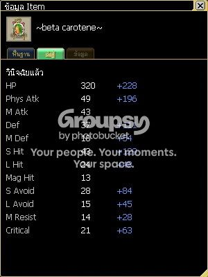

ไม่มีตัวลูกนิสิ ลำบากก เห้อๆๆ
-0- ว่าวแครอทแรย์มหาแรย์
ของอย่างอื่นยังเห็นคนขาย แต่ว่าวหายไปไหนหมด!!!
http://eco.froztic.in.th/archive/ecofanclub/
http://eco.froztic.in.th/archive/ecofanclub/viewtopic.php?f=16&t=26538
dorland เขียน:-0- ว่าวแครอทแรย์มหาแรย์
ของอย่างอื่นยังเห็นคนขาย แต่ว่าวหายไปไหนหมด!!!
utownic เขียน:LadyLavender เขียน:ตอนเวลในดัน 70
เราก้อใช้แค่ blow นะคะ บางทีก้อลากมอนมารุมแล้วใช้ phalax ตามด้วยระเบิดฝุ่น น่าเสียดายที่มีดีเลย์
แต่ที่น่าเสียดายยิ่งกว่า คือ ชาวนาไม่เหมาะกะลากเลย ตีทีละตัว เพื่อนๆคงรู้ถึงความโหด ยิ่งเวลสูงยิ่งเหนื่อยมากๆ

สู้ ต่อไป ชาวนาแห่ง Eco
ไม่มีระเบิดฝุ่นละ...
วางระเบิด เกร็ง รอ 5 วิ ตูม!!!
สะใจ...
ว่าแต่ ทำไมช่วงนี้โยนยาใส่มอนแล้วไม่ค่อยจะติดเอาซะแล้ว มันขึ้นกับ Status อะไรหรือเปล่า?




dorland เขียน:ลองใช้ power veggy stick ที่ได้จากกล่องที่ไมไมแล้ว
pet อัพเพิ่มเร็วขึ้นพรวด
ใช้แล้วจะได้status attack training กับ aim ที่ตัวผู้ใช้เอง(ไม่ใช่ pet) => เปลี่ยน pet ฝึกได้เรื่อยๆ
มีผลราว 10 นาที(คุ้มมาก)
ตอนนี้ว่าวแครอทเต็มหมดละ ยกเว้น hp, magic attack ,magic hit,ความเร็วในการโจมตี
เทียบไชเท้า
ด้านการโจมตีกับหลบหลีกโหดผิดกันเยอะ
แต่แพ้ด้าน hp โจมตีเวทย์กับป้องกันเวทย์

KuRo_NeKo เขียน:ลงกะเค้ามะ งิงิ >w< (จะเกาะดูดจนเหมือนปลิงเลย คอยดู55)
ว่าวแครอท ใส่แล้วน่ารักมั้ยอ่า ใครมีโชว์หน่อยๆ
ตอนนี้เกมใหม่จะเข้ามาเพียบเลยไม่รุจะทำไงดี อยากเล่นปายยยหมด
ปล.ปีใหม่นี้ไปไหนกานมั่ง~
ปล.2แอบเห็นเจ๊ lafara(ที่หายไปจากกระทู้นี้นานมากกกก) ที่บอร์ดเกมลูเน่าอ่า =[]=